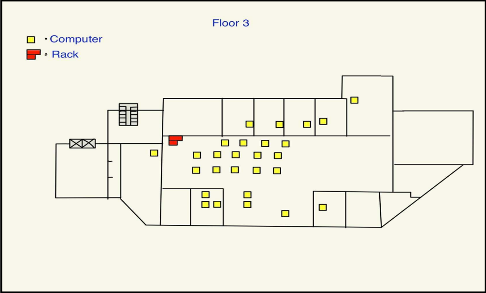
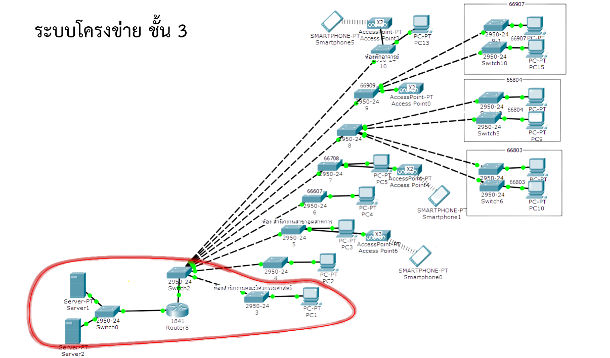

ตึกวิศวกรรมชั้นที่ 3
ห้องสํานักงานคณะวิศวกรรมศาสตร์

แผนผังห้องห้องสํานักงานคณะวิศวกรรมศาสตร์ ประกอบด้วย:
1. ตู้ Rack จำนวน 2 ตู้
2. คอมพิวเตอร์ จำนวน 27 เครื่อง

แผนภาพโครงข่าย
ชั้น 3: ศูนย์กลางระบบเครือข่าย (Core Layer) ชั้นนี้ถือเป็นห้องควบคุมหลักของระบบเครือข่ายทั้งหมดในอาคาร โดยแผนภาพโครงข่ายที่เห็นในสไลด์ คือการจำลองการทำงานที่มีศูนย์กลางอยู่ที่ชั้นนี้
หน้าที่หลัก: เป็นจุดเชื่อมต่อหลักของอาคารไปยังเครือข่ายภายนอก (อินเทอร์เน็ต) และเป็นศูนย์กลางกระจายการเชื่อมต่อไปยังชั้นอื่นๆ ทั้งหมด
อุปกรณ์สำคัญประกอบด้วย:
- Cisco Router ISR 4000: 1 ตัว ทำหน้าที่เป็นประตูหลัก (Gateway) ในการเชื่อมต่อเครือข่ายของทั้งอาคารออกสู่อินเทอร์เน็ต
- Server Cisco UCS C220 M4: 2 ตัว ทำหน้าที่เป็นเครื่องแม่ข่ายสำหรับเก็บข้อมูลหรือให้บริการต่างๆ ภายในคณะ
- Switch Cisco Catalyst 9200: 3 ตัว ทำหน้าที่เป็นสวิตช์หลัก (Core Switch) ในการรับและกระจายข้อมูลไปยังทุกชั้นของอาคาร
- Rack 42U และ 9U: ใช้สำหรับจัดเก็บอุปกรณ์ Server, Router และ Switch ทั้งหมดให้เป็นระเบียบ